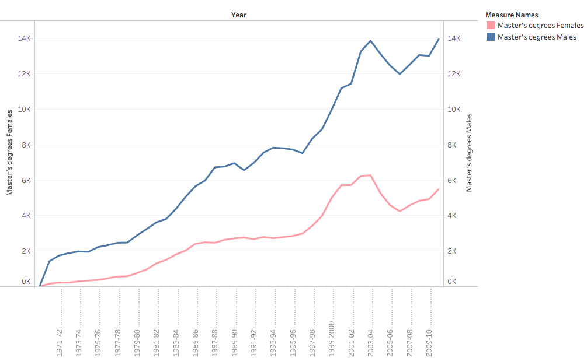

India is a country that is well-known for its success in the computer science industry. This study compares the relationships between computer science and females between India and the U.S. It shows shows that the U.S.A's female population is larger than India's female population. Though the U.S. has a higher female population, there are significantly less women with a Computer Science degree in the U.S. than India, indicating an issue of misrepresentation in the field.
Assignment 2: Exploratory Data Analysis
Cyrill Castro
Dataset
FIRST SOURCE: Science & Engineering Indicators 2016
This data contains a numerous amount of data all pertaining to various trends in STEM classes, academic performances, and public attitudes, etc. This report was produced by the National Science Foundation of the United States. I am interested in this dataset because it allows me to see the various trends of STEM classes and majors, especially between males and females. With this data, I will be able to see relationships between males and female representation in computer science, and I will be able to compare the difference in females in computer science and females in other STEM majors.
SECOND SOURCE: Differences in STEM Gender Disparity Between India and the United States
This dataset is from an article that studies the difference in STEM gender disparity between India and the United States. This report was produced by Purva Yardi, Megh Marathe, and Kentaro Toyama, who are all faculty from the School of Information at the University of Michigan. I am interested in this dataset because India is a country that thrives in success within the computer science field. Within my visualizations, it could serve as a "control" variable that can display how significant the gender disparity issue in the U.S. is.
The data is available online at the following sites:
Initial Analysis Questions
- Is there a significant difference between male representation and female representation in computer science? If so, what is that difference?
- How does the representation of females in other majors compare to the representation of females in computer science?
- How does their academic performance in necessary classes for computer science compare to the academic performance of males in the same classes?
- How does the representation of females in other majors compare to the representation of females in computer science?
- How does the representation of U.S. women in computer science compare to the representation of women in computer science in India, a country that is well-known for its success in the industry?
Discoveries & Insights
Is there a significant difference between male representation and female representation in computer science?
This visualization forms also compares India and the U.S.A, with regards to the male-to-female ration in computer science graduation education. The U.S.A. exhibits a higher ratio of maless who have graduated in computer science compared to India, meaning that there are 4 times more males than females in the field in the US as India sustains a nearly equal ratio of males-to-females in computer science.

The preceding three visualizations display the variation between males and females that have obtained a computer/information science degree, separated by the different degree levels. In all three levels, there is generally a significantly lesser amount of females, compared to males, who have obtained a bachelors, masters, and/or doctorate degree in the field of computer science. This trend has been consistent in the time period of 1970-2011.
Could education and knowledge play a factor in this misrepresentation? How does their academic performance in necessary classes compare to the academic performance of males in the same classes?

Mathematics is a required subject that is necessary for computer science, and science is a subject that can branch off into different focuses - few of which are necessary for computer science. In this study, literacy assessment tests were given to the studied subjects, and the results reveal that males have consistently been more literate than females in the subject of mathematics, whereas, in the subject of science, females and males have started to "close the gap" of literacy. With that being said, because females are shown to be less proficient in math, they are less likely to choose majors and career paths that involve heavy usage of mathematics - such as computer science.
This visualization shows that there is a bigger percentage of male students, rather than female students, who have enrolled in computer/information science courses in high school (by grade 11). The larger percentage of male students compared to female students indicates a difference of sex representation in computer science, which has stemmed from as early as high school.
In this study, it is shown that males have consistently been more proficient in physical science compared to females. Physical science is another course that is required to obtain a degree in Computer Science, so this could contribute to the larger number of males in the field (i.e. since males tend to succeed in these necessary courses, they are more likely to be able to succeed in finishing the CS degree and obtaining a job in that field). Additionally, this indicates this misrepresentation of females in the field also stems from education and understanding of subjects needed for computer science.
To support the last visualization, this visulaization shows that females are more proficient than males in the subject of biological sciences. Because females are tend to have a better understanding for biology, they are more likely to pursue a career within this field rather than the field of computer science.
How does the representation of females in other majors compare to the representation of females in computer science?
There is a smaller percentage of U.S. undergraduate females that choose STEM majors compared to U.S. undergraduate males who do choose STEM majors. This indicates that there is a lower interest in STEM amongst female undergraduates.
Additionally, the females undergraduates who do choose STEM majors have shown a general trend of choosing a major within Social/Behavioral Sciences and Natural Sciences rather than Computer Science and Engineering.
Summary
The gender disparity in computer science is a significant issue in the United States. Even though there is a larger population of women in the United States, there are more women with degrees in computer science in India. In the United States, there has been a significantly less amount of women who obtain bachelors, masters, and doctorate degrees in computer science compared to men. In grade school, males have shown to have a better academic performance in mathematics and physical science, and computer/information science courses have shown to be more popular than males. Females, on the other hand, have displayed a better performance in biological sciences. In college, there is a smaller amount of females that choose STEM majors, and of those females in STEM majors, there is a larger preference in majors pertaining to natural sciences and social/behavior sciences rather than math/computer sciences and engineering.